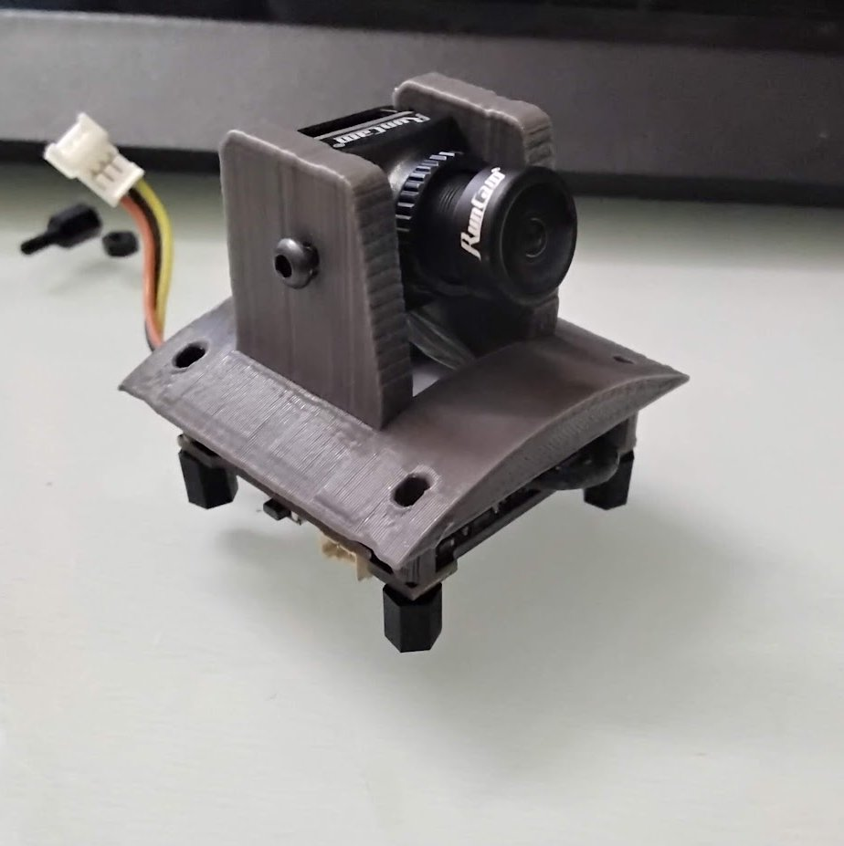
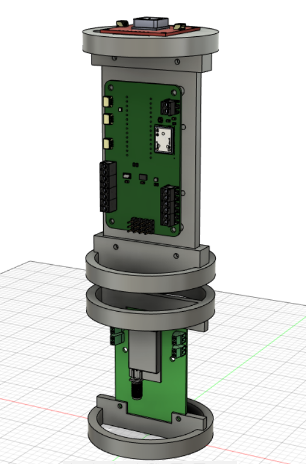
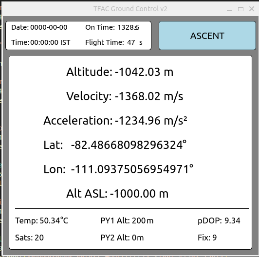

November 2022 - December 2022
Dev Log 12
Project Update - November 2022
I acquired a RunCam Split 3 camera for my rockets and designed and 3D printed a mount for the camera (fig1). The basic idea of this mount is that the camera sensor will stick out of the rocket's airframe while the recording board will be safely mounted inside the rocket's airframe.

I also fully redesigned the avionics stack (fig 2). Rather than one huge sled with all the components mounted, I decided to divide the avionics stack into two main sections: a flight computer section, and a telemetry section. The flight computer section holds the TFAC flight computer, LiPo battery and SAM-M8Q GNSS radio module. The telemetry section holds

Project Update - December 2022
In December I did a lot of work on the telemetry system. First I fixed the problems with the telemetry radio by lowering the transmission rate and the amount of data sent. Instead of sending 30+ channels of data 15 times a second, I decided to only have the telemetry radio send 13 channels of important data 3 times a second.
To do this I also had to redesign the Ground Control Software (GCS). I couldn't have big fancy graphs or rows upon rows of data, I needed something that was simple and showed all the data in really big font, so that's what I did. The GCS is written in Python with PyQt5 and uses the same color scheme as the older GCS. This new Ground Control Software would take up an eight of the screen rather than the whole screen. At the top is a box with all the timing related data (date, time, Vehicle On Time, Flight Time). Right next to it is a color-changing box that shows the vehicle state. Below the header is the main data box which shows important data like altitude, velocity, acceleration, GPS coordinates, etc. This UI is both easier for the telemetry system computers and also the computer that the UI is running on. GitHub repo with the code: https://github.com/abhignay/GroundControlUI-v2
